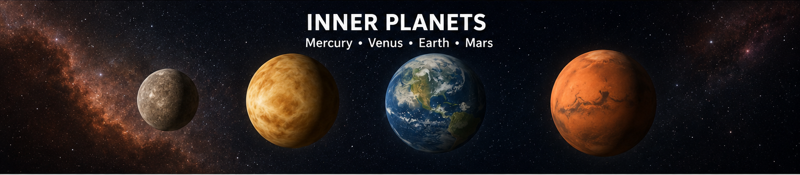

Mercury, Venus, Earth, and Mars
The inner planets are the four planets closest to the Sun: Mercury, Venus, Earth, and Mars.
These planets are smaller, rocky, and have solid surfaces. They are also known as terrestrial planets.

The inner planets are the four planets closest to the Sun: Mercury, Venus, Earth, and Mars.
These planets are smaller, rocky, and have solid surfaces. They are also known as terrestrial planets.
